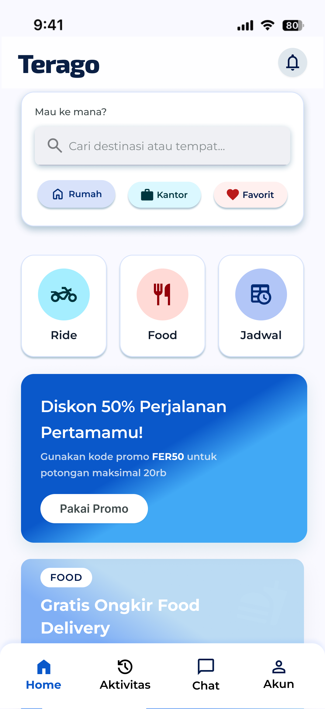
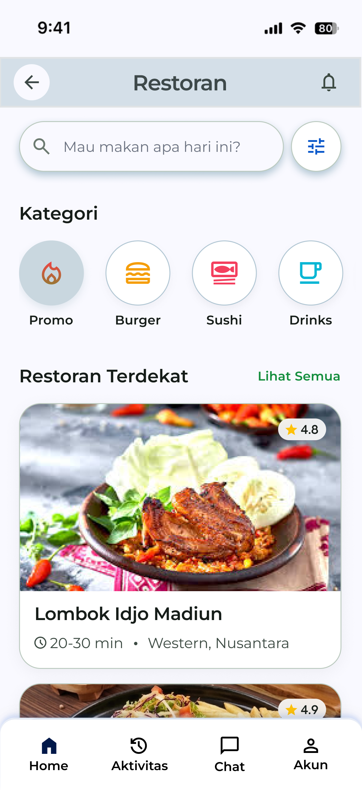
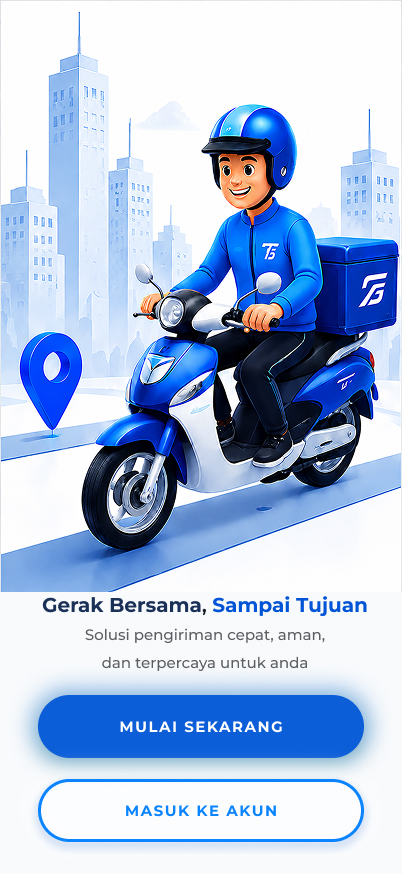
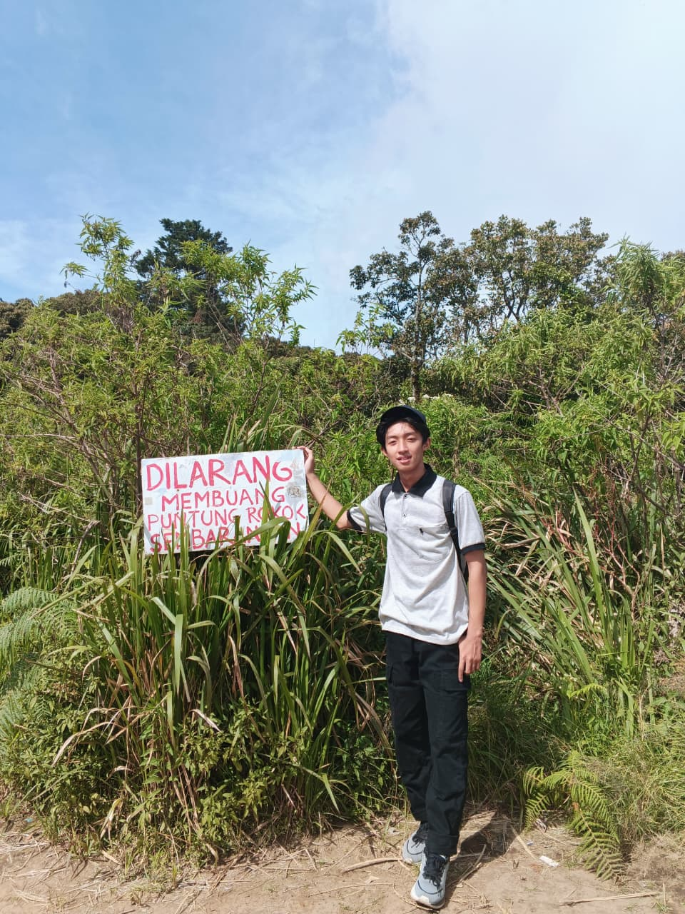
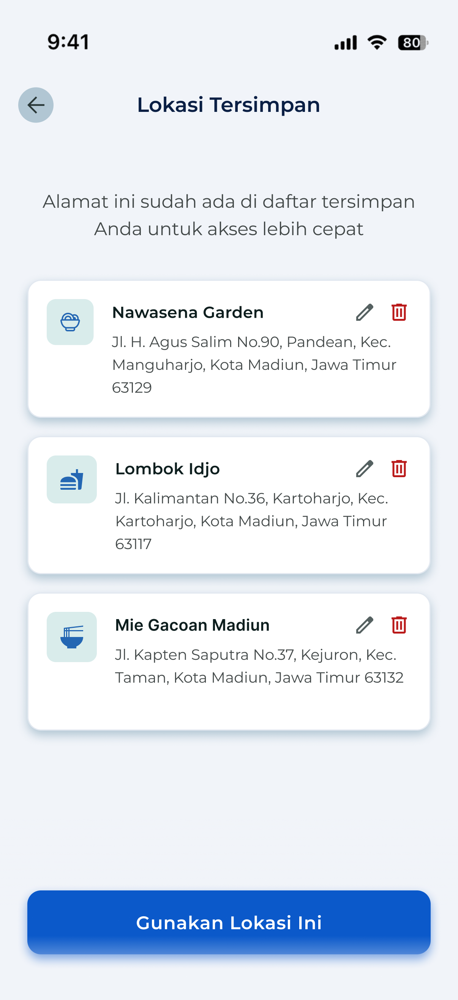
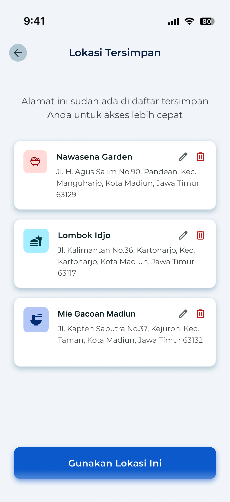
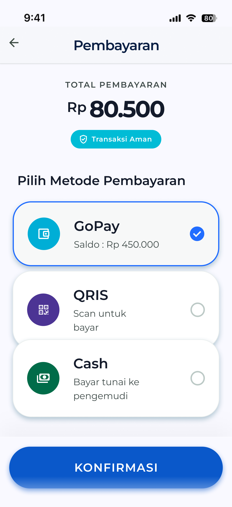
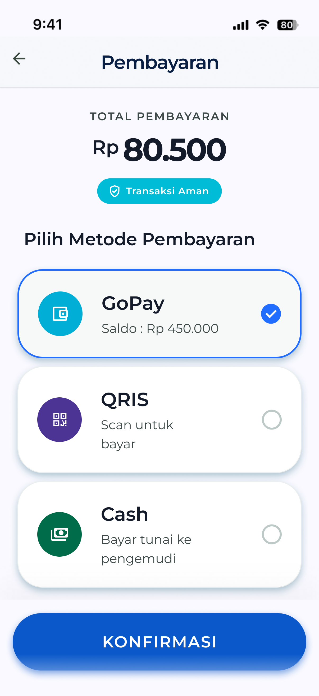
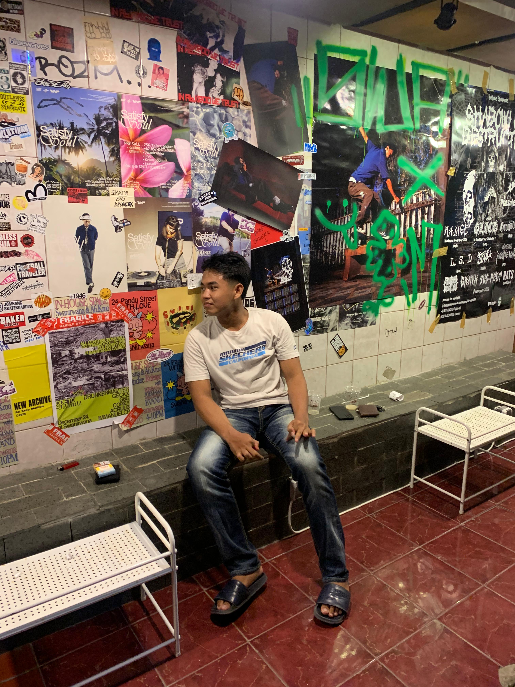

Antarmuka Aplikasi Terago
Tampilan aplikasi Terago yang dirancang untuk menghadirkan kenyamanan dan keandalan mobilitas anda



Sebuah perjalanan desain yang dimulai dari memahami pengguna, mendefinisikan masalah, hingga menghadirkan solusi nyata melalui aplikasi Terago

Tampilan aplikasi Terago yang dirancang untuk menghadirkan kenyamanan dan keandalan mobilitas anda


Proses desain Terago dikerjakan secara sistematis menggunakan pendekatan design thinking berbasis riset. Untuk menghasilkan solusi yang benar benar menjawab kebutuhan pengguna di lapangan
Proyek ini berfokus pada identifikasi dan penyelesaian pain points kritis yang dihadapi masyarakat dalam bermobilitas sehari-hari, terutama terkait efisiensi pemesanan, inklusivitas antarmuka, sampai aspek keamanan yang sering diabaikan.
Tujuannya adalah merancang pengalaman bermobilitas yang jauh lebih andal, responsif, dan ramah bagi segala kalangan, memangkas hambatan yang ada, menghadirkan fitur yang benar-benar dibutuhkan pengguna, serta menghadirkan identitas visual yang profesional sekaligus menenangkan.

Memberikan rasa aman dengan fitur Driver Perempuan, SOS darurat, dan verifikasi identitas driver

Menghadirkan navigasi cerdas dan estimasi perjalanan real-time untuk pengalaman yang lebih terpercaya

Memberikan pengalaman perjalanan yang lebih personal melalui fitur multi-stop, QRIS, reservasi kendaraan, dan akses cepat ke rute favorit
Tahap Empathize berfokus pada pemahaman untuk terhadap kebutuhan, pengalaman, dan tantangan pengguna untuk membangun solusi yang lebih tepat sasaran
Wawancara mendalam dengan 5 partisipan aktif untuk memahami kebutuhan dan kendala nyata mereka
Memetakan apa yang pengguna katakan, pikirkan, lakukan, dan rasakan selama perjalanan mereka
Pengguna dengan mobilitas tinggi yang mengutamakan efisiensi, kenyamanan, dan keamanan dalam perjalanan sehari-hari
Dari data empathize, kita sintesis insight dan mendefinisikan masalah utama yang perlu diselesaikan
Pengguna transportasi online seperti Ardyana, Indri, Dina, Rendra, dan Auliya memerlukan layanan transportasi yang memberikan rasa aman dan kepercayaan terhadap driver, estimasi waktu yang akurat, serta fitur yang sesuai kebutuhan spesifik mereka. Sehingga pengguna tidak lagi merasa khawatir, tidak nyaman, dan terpaksa beralih ke kendaraan pribadi hanya karena transportasi online dirasa kurang dapat diandalkan
Saya memprioritaskan fitur dengan dampak tertinggi (Highest Impact) berdasarkan frekuensi kemunculan masalah di seluruh 5 narasumber dan kemampuan eksekusi dalam desain
Top Priorities:
Mengumpulkan berbagai ide solusi sebelum menentukan desain yang paling sesuai
Mewujudkan ide menjadi prototype interaktif high-fidelity yang siap diuji langsung oleh pengguna
Melakukan pengujian langsung dengan pengguna untuk memastikan solusi yang dibuat sudah sesuai dan menemukan bagian yang perlu diperbaiki
| Task | Status | Catatan |
|---|---|---|
| Registrasi dan Login | ✓ Berhasil | Tester berhasil menyelesaikan tanpa kendala |
| Filter Driver Perempuan | ✓ Berhasil | Fitur ditemukan dengan mudah |
| Fitur SOS Darurat | ✓ Berhasil | Fitur berjalan dengan baik dan mudah diakses saat dibutuhkan |
| Lacak Perjalanan | ✓ Berhasil | Informasi perjalanan tampil jelas dan mudah dipantau |
| Reservasi Kendaraan | ✓ Berhasil | Proses reservasi berjalan lancar dan mudah dipahami |
| Rute Favorit | ✓ Berhasil | Penyimpanan rute favorit berjalan dengan baik dan mudah digunakan |

| Task | Status | Catatan |
|---|---|---|
| Registrasi & Login | ✓ Berhasil | Flow registrasi jelas dan mudah diikuti |
| Filter Driver Perempuan | ✓ Berhasil | Toggle filter driver sangat mudah ditemukan |
| Fitur SOS Darurat | ✓ Berhasil | Fitur terasa aman dan responsif |
| Lacak Perjalanan | ✓ Berhasil | Informasi lokasi dan perjalanan tampil akurat serta mudah dipahami |
| Reservasi Kendaraan | ✓ Berhasil | Alur reservasi sudah jelas |
| Rute Favorit | ✓ Berhasil | Fitur rute favorit membantu akses perjalanan menjadi lebih cepat |
Hasil dari usability testing digunakan untuk menyempurnakan desain aplikasi agar lebih mudah dipahami dan memberikan kenyamanan bagi pengguna

Tampilan icon lokasi tersimpan didominasi oleh satu warna sehingga kurang menarik untuk dilihat

Menambahkan variasi warna pada icon lokasi tersimpan sehingga lebih menarik untuk dilihat

Layout pada pilihan metode pembayaran terlihat menumpuk dan terasa kurang rapi

Menata ulang elemen dan jarak antar komponen agar tampilan lebih konsisten dan terlihat rapi
Dari pengujian usability yang dilakukan bersama 2 tester, seluruh task utama pada aplikasi berhasil diselesaikan dengan baik. Pengguna dapat memahami alur penggunaan aplikasi dengan mudah, mulai dari proses registrasi, pelacakan perjalanan, hingga penggunaan fitur favorit dan reservasi kendaraan. Hasil pengujian menunjukkan bahwa desain aplikasi sudah nyaman digunakan, mudah dipahami, dan sesuai dengan kebutuhan pengguna
Terima kasih telah menjelajahi proyek portofolio Terago. Berikut adalah informasi mengenai saya sebagai perancang antarmuka

Saya adalah seorang mahasiswa yang berfokus pada desain antarmuka pengguna (UI) dan pengalaman pengguna (UX). Melalui proses pemecahan masalah melalui pendekatan User Centered Design, saya berusaha menciptakan solusi digital yang tidak hanya memiliki tampilan yang menarik tetapi juga mudah digunakan dan mampu memberikan solusi sesuai dengan kebutuhan para pengguna